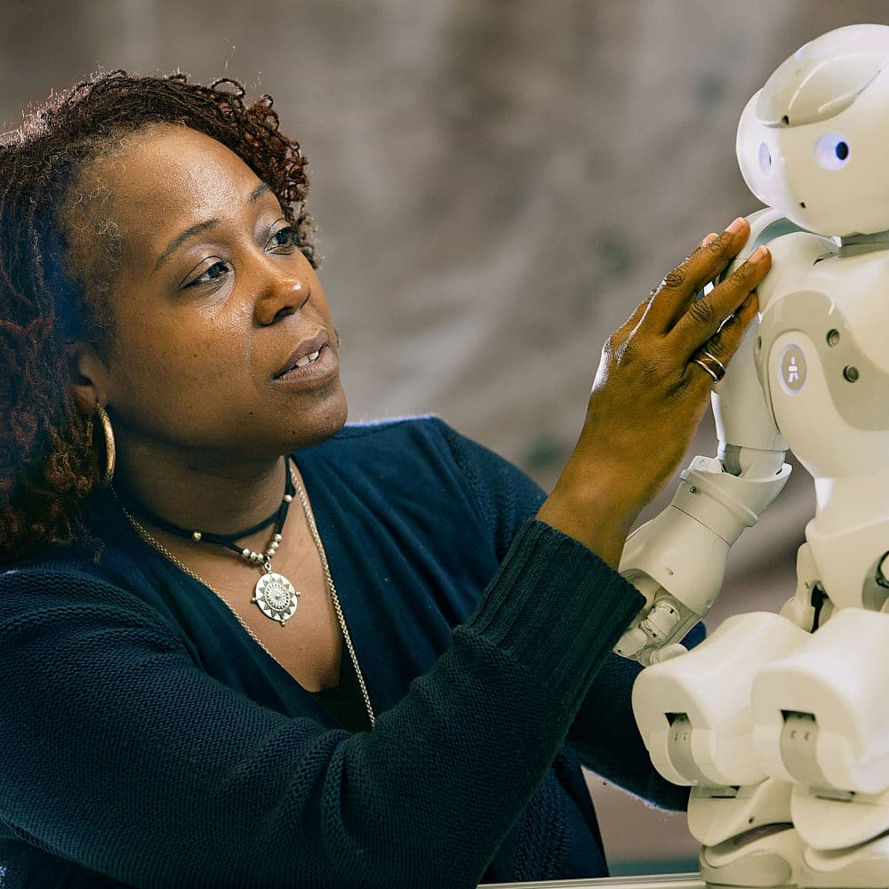

Ayanna Howard

Ayanna Howard é uma engenheira, pesquisadora e educadora americana especializada em **inteligência artificial, robótica e acessibilidade tecnológica**. Ela é uma das pioneiras na aplicação de **IA e robótica assistiva** para melhorar a qualidade de vida de pessoas com deficiência. Sua carreira inclui passagens pela NASA, onde trabalhou no desenvolvimento de robôs autônomos para exploração planetária, e na academia, liderando pesquisas inovadoras em aprendizado de máquina e interação humano-robô.
Principais Contribuições
- Desenvolvimento de robôs autônomos para missões espaciais na NASA.
- Pioneira na aplicação de inteligência artificial em tecnologias assistivas.
- Fundadora da empresa Zyrobotics, que cria soluções tecnológicas para crianças com necessidades especiais.
- Autora de pesquisas em aprendizado de máquina e interação humano-robô.
- Atualmente reitora da Faculdade de Engenharia da Universidade Estadual de Ohio.
Saiba mais
Voltar